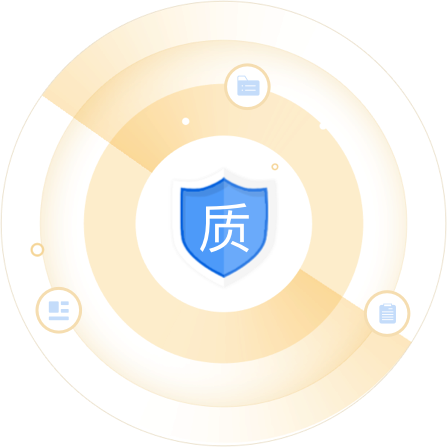
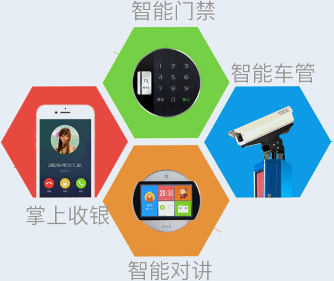
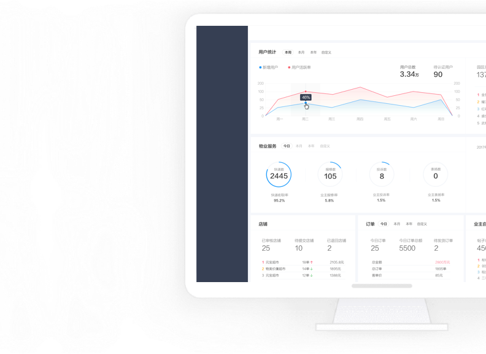

-

解决财务管控难题
应收明确，实收实时登记，减少项目现金管理风险；
实收费用关联收费周期，区分收往欠、当期、预收费用明细；
欠费分析，协助管理经营决策；
预算管控，灵活授权的同时监管费用使用过程
-
提升协同办公效率
统一办公平台，降低办公成本；
业务流程无缝链接，规范业务
流程，实现移动审批，提高效率
-
规范员工管理体系
全生命周期员工档案管理，智能提醒避免用工风险；
智能排版，大大减少项目多变的排班工作量；
网络考勤智能关联排班，并结合流程自动形成考勤信息，降低人工干预及吃空饷的可能性；
一键薪酬，提高薪资计算的
效率同时降低差错率；学习平台制定员工成长
路径，为企业发展提供员工
成长保障
-
保障客服监督制度
报事、投诉、咨询统一平台管理，
信息全面监控，不遗漏；事务处理延迟上报，管理实时监
管，避免群诉；业务流程规范，处理过程透明，
可追溯；支持业主APP报修，与管理系统
互通，提高效率；事务实时分类统计，辅助管理决策
-

加强品质检查管理
规范项目自检内容、频度、
标准，降低总部对项目的
品质监管难度；标准规划化检查模板，避免人
情检查，提高品质检查的有效性；问题记录方便，整改过程透明，降低检查难度，提高检查效率
-

提升智慧硬件应用
降低入口管理成本及管理
难度；提升企业管理形象，扩大
企业自身竞争能力
-

实时掌控整体运营
多维度横向数据对比反映
企业运营状态，实时反映
企业健康指数；同比、环比及行业数据对
比，辅助管理经验决策助
力物业经营开源